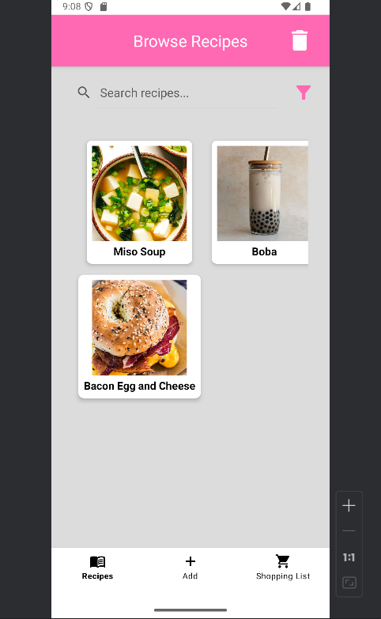

I'm available for Android Java Application Design... Check out one of my recent apps from a group project at SNHU!
YesChef Interface
I'm available for AGILE Systems Analysis and Design... Check out one of my recent projects where I analyze and design schema for a driving school system.
I'm available for Statistical Modeling... Check out my data visualization project where I analyze baseball data.
I also analyzed mock-spaceship data to see what model would be best used for predicting recall (whether a passenger would be transported to another planet). You can read about that here: Spaceship Titanic